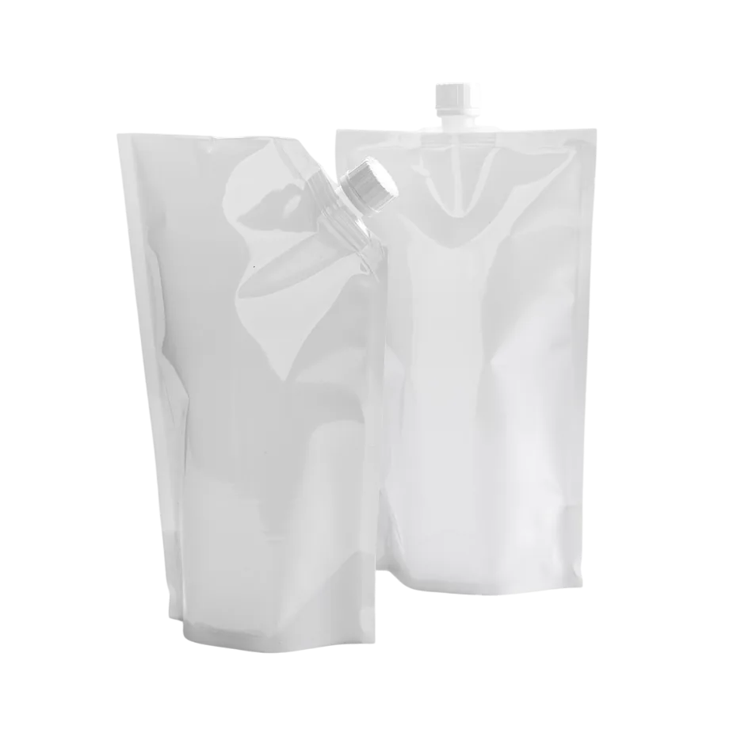
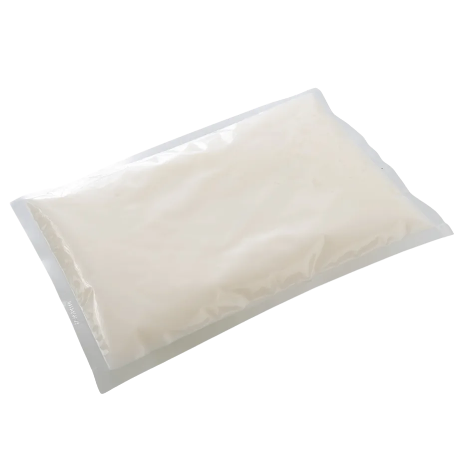
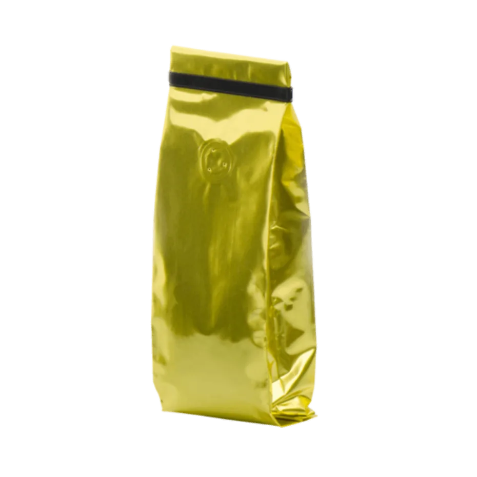

01
Referencia de catálogo
Bolsa tipo Doy pack
Formato que se sostiene de pie para presentar el contenido.

Imagen publicada por EmpackDoy pack, bolsa plana o flow pack. Empieza por el formato y prepara una solicitud con medidas y volumen.
Guarda tus referencias en una lista local y prepara el siguiente paso. Precios, variantes y existencias se revisan en cada ficha oficial.
Formato que se sostiene de pie para presentar el contenido.

Formato para exhibición horizontal o colgada; revisar especificación técnica.

Formato publicado para productos como café y té; requiere validación del material.
Catálogo de bolsas doy pack, films y condimentos; formulario que solicita el producto a cotizar.
Prueba cantidades y condiciones. Obtén un resumen local para revisar antes de hablar con la empresa.
Datos revisados el 3 de noviembre de 2026. La empresa confirma cualquier condición vigente.
Formato que se sostiene de pie para presentar el contenido.
Formato para exhibición horizontal o colgada; revisar especificación técnica.
Formato publicado para productos como café y té; requiere validación del material.
El catálogo incluye films, clips, láminas separadoras y condimentos.
La web recibe solicitudes indicando el producto de interés.
El sitio publica Ofibodegas Calle Blancos, bodega 4.
La aplicación final requiere confirmar dimensiones, material y uso con Empack.
No. El tamaño del lote se introduce como supuesto; Empack debe validarlo.